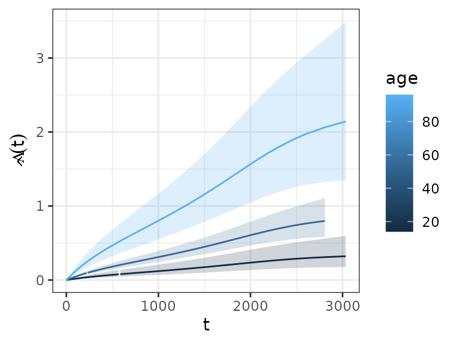

Survival analysis entails a set of standard tasks beyond model estimation which need to be performed in most real world applications. These task include:
- extraction/visualization of the predicted (cumulative) hazards or survival
- summary/visualization of estimated effects probabilities for specific covariate specifications
- visualization of non-linear covariate effects
- …
The pammtools package provides many
convenience functions to facilitate these tasks. The overall philosophy
of the package is to provide functions that return the underlying data
used for visualization in a tidy format (Wickham et al.
2014), such that everybody can use familiar tools for further
processing. In addition, some (high level) convenience functions for
visualization are also included.
To illustrate the usual workflow and some of the convenience
functions provided by pammtools, we will
use the tumor in the following sections. For a more
complete overview see Bender and Scheipl (2018).
Hazard, cumulative hazard and survival probabilities
Often one is interested in calculating the hazard, cumulative hazard
or survival probability given specific values for some covariates (while
other covariates are fixed at their mean values). For PAMMs, one usually
also needs to create a data set where all intervals occur, in order to
be able to calculate predicted values at different time points.
pammtools provides a flexible interface to
create such data sets (make_newdata) and the functions
add_hazard-
add_cumu_hazardand add_surv_prob
to add respective predicted values (including confidence intervals)
of the respective quantities. We illustrate the workflow using the
tumor data and the model given below:
ped <- tumor %>% as_ped(Surv(days, status)~ age + sex + complications, id = "id")
pam <- gam(ped_status ~ s(tend) + sex + age + complications, data = ped,
family = poisson(), offset = offset)In the following, we create a new data set that contains all
intervals as well as mean values for all other covariates. Note that
within make_newdata you can specify the desired covariate
values by using any function applicable to the data type of the
respective column. The new data will contain one row for each
combination of the two variables (similar to
expand.grid):
ped_df <- ped %>% make_newdata(tend = unique(tend), age = seq_range(age, n = 3))Calling the respective functions, we can add the (predicted) hazard to the newly created data.
Hazard
ped_df <- ped_df %>% add_hazard(pam)
ped_df %>% select(interval, hazard, ci_lower, ci_upper) %>% head()## # A tibble: 6 × 4
## interval hazard ci_lower ci_upper
## <fct> <dbl> <dbl> <dbl>
## 1 (0,1] 0.000196 0.000110 0.000349
## 2 (0,1] 0.000505 0.000375 0.000680
## 3 (0,1] 0.00130 0.000861 0.00198
## 4 (1,2] 0.000195 0.000109 0.000348
## 5 (1,2] 0.000504 0.000375 0.000678
## 6 (1,2] 0.00130 0.000860 0.00197## # A tibble: 6 × 4
## interval hazard ci_lower ci_upper
## <fct> <dbl> <dbl> <dbl>
## 1 (2595,2808] 0.0000657 0.0000269 0.000160
## 2 (2595,2808] 0.000170 0.0000795 0.000362
## 3 (2595,2808] 0.000438 0.000191 0.00100
## 4 (2808,3034] 0.0000521 0.0000161 0.000168
## 5 (2808,3034] 0.000134 0.0000459 0.000393
## 6 (2808,3034] 0.000347 0.000113 0.00107Which in turn can be conveniently plotted using respective functions, e.g.
ggplot(ped_df, aes(x = tend, group = age)) +
geom_stephazard(aes(y = hazard, col = age)) +
geom_stepribbon(aes(ymin = ci_lower, ymax = ci_upper, fill = age), alpha = 0.2) +
ylab(expression(hat(lambda)(t))) + xlab(expression(t))Hazard Ratio
The hazard ratio can be calculated by specifying the
reference argument:
# the code below gives hazard reatio of a 30 year old relative to a 58 year old (cp)
# ped %>%
# make_newdata(age = c(30)) %>%
# add_hazard(pam, reference = list(age = c(58))) %>%
# select(hazard, ci_lower, ci_upper)
# -> 30 year old has about half the risk of a 58 year oldThis might seem a little convoluted, but can be easily generalized in case of time-varying effects, time-dependent covariates, cumulative effects, etc.
Cumulative hazard
Analogously, we can obtain the cumulative hazard (piece-wise linear function). Note that for the cumulative hazard and survival probability it is important to group the data accordingly, such that the cumulative hazard is cumulated for each value of the grouping variable. Otherwise it would be cumulated over the whole data set (which is usually not intended, except if the specified variable is a time-dependent covariate).
ped_df %>%
group_by(age) %>%
add_cumu_hazard(pam) %>%
ggplot(aes(x = tend, y = cumu_hazard, ymin = cumu_lower, ymax = cumu_upper, group = age)) +
geom_hazard(aes(col = age)) + geom_ribbon(aes(fill = age), alpha = 0.2) +
ylab(expression(hat(Lambda)(t))) + xlab(expression(t))## Warning: Removed 1 row containing missing values or values outside the scale range
## (`geom_hazard()`).
Survival probability
ped_df %>% group_by(age) %>% add_surv_prob(pam) %>%
ggplot(aes(x = tend, y = surv_prob, ymax = surv_lower, ymin = surv_upper, group = age)) +
geom_line(aes(col = age)) + geom_ribbon(aes(fill = age), alpha = 0.2) +
ylab(expression(hat(S)(t))) + xlab(expression(t))This approach is very convenient, as it can be extended to arbitrary covariate specifications:
ped_df_sex <- ped %>%
make_newdata(tend = unique(tend), age = seq_range(age, 3),
complications = levels(complications)) %>%
group_by(complications, age) %>%
add_surv_prob(pam)
ggplot(ped_df_sex, aes(x = tend, y = surv_prob, group = age)) +
geom_ribbon(aes(ymin = surv_lower, ymax = surv_upper, fill = age), alpha = 0.3) +
geom_surv(aes(col = age)) +
ylab(expression(hat(S)(t))) + xlab(expression(t)) +
facet_wrap(~complications, labeller = label_both)Visualization of non-linear covariate effects
Data sets for the visualization of the (non-linear) effect of a
continuous covariates can be created in a similar fashion. For
illustration, we add a non-linear age effect to the previous model (see
also high level functions?gg_smooth and
?gg_tensor and gg_re for
mgcv::plot.gam like plots):
ped <- tumor %>% as_ped(Surv(days, status)~ age + sex + complications +
charlson_score, id = "id")
pam <- gam(ped_status ~ s(tend) + sex + s(age) + complications ,
data = ped, family = poisson(), offset = offset)Using make_newdata and add_term we
obtain:
term_charlson <- ped %>%
make_newdata(age = seq_range(age, n = 25)) %>%
add_term(pam, term = "age", reference = list(age = mean(.$age)))
ggplot(term_charlson, aes(x = age, y = fit)) +
geom_line() +
geom_ribbon(aes(ymin = ci_lower, ymax = ci_upper), alpha = 0.2)Similarly, we could use high level function gg_slice to
obtain the estimated effect of the age variable, relative to the mean
age and age of 30, respectively: